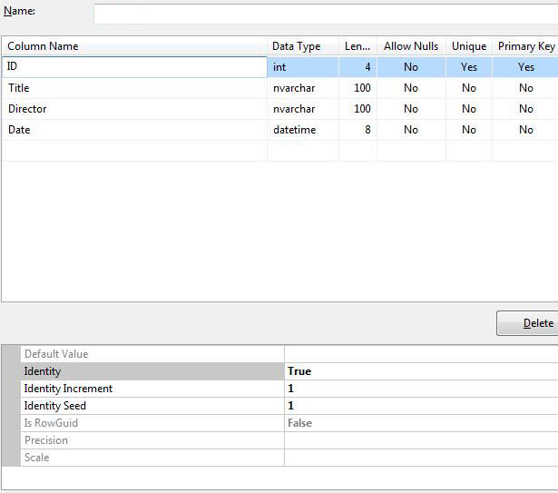

ASP.NET MVC - SQL 数据库
ASP.NET MVC を学ぶために、インターネットアプリケーションを構築します。
第6部：データベースの追加
创建数据库
Visual Web Developerには、SQL Server Compactという無料のSQLデータベースが含まれています。
このチュートリアルで必要なデータベースは、以下の簡単な手順で作成できます：
- 右击Solution Explorerウィンドウ内のApp_Data文件夹
- 选择Add, New Item
- 选择SQL Server Compact Local Database *
- データベースに名前を付けますMovies.sdf
- 点击Add按钮
*オプションに SQL Server Compact Local Database がない場合は、お使いのコンピュータに SQL Server Compact がインストールされていないことを意味します。次のリンクからインストールしてください。SQL Server Compact
Visual Web Developer は、自動的に App_Data フォルダー内にそのデータベースを作成します。
注释：このチュートリアルでは、SQLデータベースに関する基礎知識が必要です。このトピックを先に学習したい場合は、当サイトをご覧ください。SQL 教程。
データベーステーブルを追加します
双击App_Dataフォルダ内のMovies.sdfファイルが開きますDatabase Explorer窗口。
データベースに新しいテーブルを作成するには、右クリックします。Tablesフォルダを選択し、次に選択しますCreate Table。
次のような列を作成します：
| 列 | 类型 | NULL を許可するかどうか |
|---|---|---|
| ID | int (primary key) | No |
| Title | nvarchar(100) | No |
| Director | nvarchar(100) | No |
| Date | datetime | No |
列の説明：
IDテーブルの各レコードを識別するための整数（数値のみ）です。
Title映画のタイトルを格納するための、100文字長のテキスト列です。
Director監督の名前を格納するための、100文字長のテキスト列です。
Date映画の公開日を格納するための日付列です。
上記の列を作成した後、ID列をテーブルの主キー（レコード識別子）として設定する必要があります。これを行うには、列名（ID）をクリックして、次を選択します。Primary Key。において Column Propertiesウィンドウで設定しますIdentity属性は True：

テーブルの列を作成したら、テーブルを保存して次の名前を付けます。MovieDBs。
注释：
私たちは意図的にテーブルを "MovieDBs"（末尾のs）と命名しました。次の章では、データモデル用の "MovieDB" を見ることになります。少し奇妙に見えるかもしれませんが、この命名規則によってコントローラーがデータベーステーブルに接続できるようになります。このように使用する必要があります。
データベースレコードを追加します
Visual Web Developer を使用して、movie データベースにいくつかのテストレコードを追加できます。
双击App_Dataフォルダ内のMovies.sdf文件。
Database Explorer ウィンドウ内を右クリックしますMovieDBs表，并选择Show Table Data。
いくつかのレコードを追加します：
| ID | Title | Director | Date |
|---|---|---|---|
| 1 | Psycho | Alfred Hitchcock | 01.01.1960 |
| 2 | La Dolce Vita | Federico Fellini | 01.01.1960 |
注释：ID列は自動的に更新されるため、編集する必要はありません。
接続文字列を追加します
あなたへのWeb.configファイル内の<connectionStrings>要素に次の要素を追加します：
connectionString="Data Source=|DataDirectory|Movies.sdf"
providerName="System.Data.SqlServerCe.4.0"/>
其他扩展